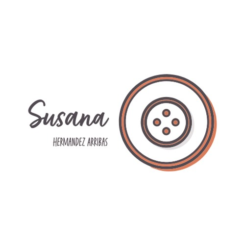

Bienvenidos a La Casa de Susi
En Creaciones Arribas, celebramos la belleza de la artesanía. Cada pieza que creamos está inspirada en la naturaleza, la tradición y la pasión por el arte.
Conoce nuestra historia

Nuestros Valores
Artesanía
Creemos en el poder de las manos para dar vida a algo único y especial.
Sostenibilidad
Comprometidos con materiales y procesos que respetan el medio ambiente.
Inspiración
Cada bolso cuenta una historia, inspirada en la belleza y personalidad que nos rodea.